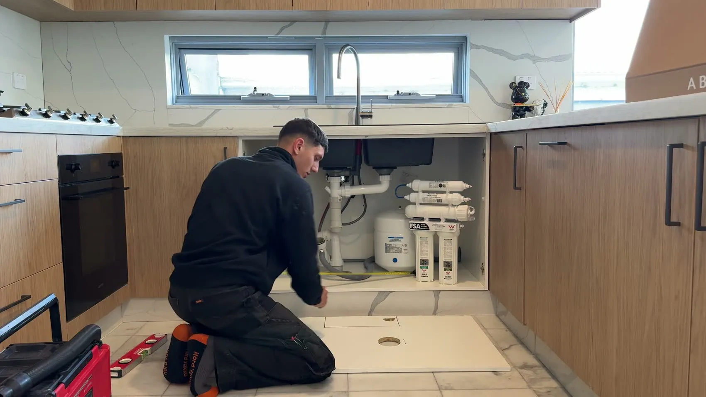
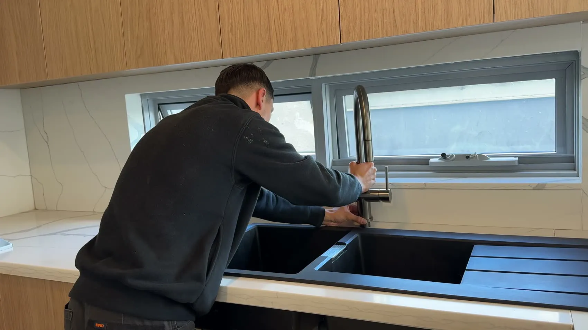
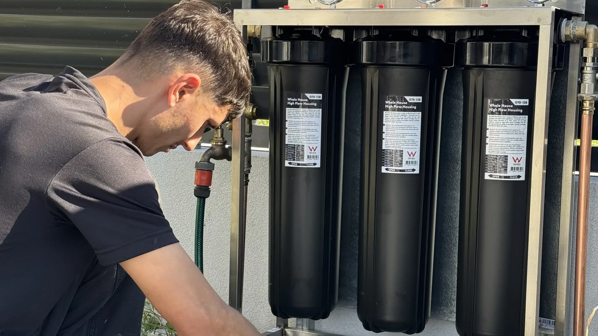

You're not just buying a box on the wall. You're buying into a relationship.
Every twelve months we come back. New cartridges, the water tested, the whole system checked over.
Covered for life while you stay serviced with us. You never pay for it twice.
5.030 Google reviews
Five stars, every single time.
Every review on Google, and not a single complaint on file.
“Found this one after specifically searching for a system that removes chloramine, not just chlorine. Nice people to deal with and very happy with the installation.”
Jun YinGoogle review
“Wow what difference! Honestly amazing service from Jean-Paul.”
Jade DanielleGoogle review

Under the sink, Strathfield
“Great to deal with, quality work. Highly recommend.”
Jye O'NeilGoogle review
“Fantastic home filters. Clean and easy to deal with. Highly recommend.”
Oliver AlameriGoogle review
The tap, after
“Now that’s water! I don’t have to buy bottled water anymore. We upgraded our filtration system and what a difference.”
Mandy BoustaniGoogle review
“Jean-Paul came for a free inspection and provided everything I needed to make the right decision.”
Sergio ZambranoGoogle review
The cabinet at the mains
“Extremely knowledgeable and professional service. With an easy installation and complete satisfaction with the product supplied.”
Brendan TinkGoogle review

The yearly service
“Absolutely fantastic experience! They were professional, extremely knowledgeable, friendly, and made the whole process seamless.”
GeorgiaGoogle review
“From start to finish the interaction, communication and experience was positive, fast and comprehensive.”
Scott PurseyGoogle review

New cartridges going in
“Our water quality is absolutely great! I would recommend this to absolutely everyone who is looking to focus on their health more.”
Whole house water filtration in Sydney, written down.
Everything the film shows, in plain words for the reader who wants the detail. What it removes, what happens on the day, what it costs to run, and where we install it.
The HPF-3, $3,850 installed and $770 a year
A whole house water filtration system in Sydney costs from $3,850 installed, with annual servicing at $770.
That is the HPF-3 whole house water filter, the stainless steel cabinet in the film above. Supply, installation at your water meter by a licensed plumber, and GST, in the one price, quoted in writing before we start. The price hasn't moved. You can pay it off with humm, and if you want the ladder for every system we fit, read what a water filter costs to install in Sydney.
What a whole house water filter removes from Sydney water
Three full size 20 inch stages with catalytic carbon, which is what actually deals with chloramine. That means every tap in the house and the shower, which is where most of it gets to you.
Sydney's water is safe. It is just not pure. Sydney Water treats it for the whole city, and most of Sydney is treated with chloramine, which is chlorine combined with ammonia so the disinfectant lasts the whole way through the pipe network. Chlorine gasses off. Chloramine doesn't. It's built to last the whole way through the pipes, so it's still there at your tap and still there in the shower.
The numbers are public. The NHMRC's Australian Drinking Water Guidelines set the taste and smell threshold for monochloramine at 0.5 mg/L, and Sydney Water's own quarterly quality reports show all seven chloraminated Sydney delivery systems running between 0.72 and 1.16 mg/L. Well inside the health guideline, and above the point where you can taste it. You're not imagining it.
The first stage takes out sediment at 5 micron. The second is a 20 micron low pressure drop carbon block for chlorine, taste and smell. The third is 0.5 micron catalytic carbon, the media made for chloramine, with three full size housings giving it the contact time it needs. What comes out helps give your skin and hair a break from the disinfectant, and the minerals stay in, because minerals are good. The full picture of what is in Sydney water is on its own page.
How do whole house water filters work?
A whole house water filter is fitted at the mains, before the water reaches any tap. Ours runs three full size 20 inch stages: sediment, then carbon block, then catalytic carbon. Every tap, shower and bath in the house runs through it.
The cabinet sits on the incoming line straight after the water meter, so the whole house is behind it: the kitchen tap, every bathroom, the shower, the bath, the laundry, the dishwasher and the hot water system. Nothing changes at the taps and nothing needs power. Water comes in from the street at mains pressure, passes through the three stages in order, and goes on into the house purified. An under sink system treats one tap. A mains water filter treats every outlet in the house at once.
Whole house water filter installation, what actually happens on the day
Whole house water filter installation takes about two hours. Jean-Paul Barbar fits it at your water meter, pressure tests it, and shows you the cabinet before he leaves. NSW plumbing licence 461511C.
Get a fixed price, in writing.Call 0430 546 749 or book a free assessment. We confirm the house suits the system and give you one price for supply, installation and GST before anything is booked.
Pick a day.Most Sydney installations are booked within the week. You get a reminder the day before.
The install, about two hours.Jean-Paul isolates the mains at the meter, fits the cabinet on a short run of new copper with its own isolation valves, and connects the three stages. The water is off for a short while and back on before he leaves.
Pressure tested and flushed.The system is tested under mains pressure, the cartridges are flushed through, and the water is checked at the tap.
The walkthrough.He shows you the cabinet, the gauges and the valves, and the first annual service goes in the diary for twelve months' time.
Everything for the day comes with him: the WaterMark and NSF certified system, the fittings, the valves and the tools. No subcontractors, no return visit.
What it costs to run, ten years, in dollars
$770 a year to service, published, not quoted later. The price hasn't moved.
One visit a year. We come back every twelve months, fit new cartridges in all three stages, test the water and check the system over, and that visit is what keeps the lifetime cover alive. Over ten years that is $3,850 on day one and ten services at $770, so $11,550 in total for every tap and every shower in the house, which works out at a little over $3 a day. No contract, and you pay per service when it is due. It is the same visit our water filter servicing Sydney customers get on every system we fit, done by the plumber who installed it.
Whole home filtration for a full house, every tap and every shower
One system at the mains and the whole home is behind it. That is whole home filtration in the plain sense: a full house water filtration system, not a filter on one tap.
A lot of families ring about the kitchen tap and end up putting the whole house system in for the shower, because that is where most of the water actually reaches you, and a filter on one tap cannot help with that. A water filter for the entire house helps take the chlorine and chloramine back out before the shower, the bath and the laundry as well as the glass. Our reverse osmosis systems under the sink make the finest drinking water in the range. A household water filtration system at the mains is a different job: it helps purify everything before it gets to you.
Whole house reverse osmosis, why we do not do it and what we fit instead
We fit a three stage whole house system at the mains rather than whole house reverse osmosis. Reverse osmosis strips the minerals and runs slowly, which suits one drinking tap and not a whole home. For drinking water we fit reverse osmosis under the sink and remineralise it.
There is a second reason, and it is the one people do not expect. A reverse osmosis membrane rejects by size and charge, and monochloramine is a small uncharged molecule, so it goes straight through. The membrane doesn't take chloramine out. The carbon does. A whole house reverse osmosis system would strip the minerals from every tap, run the whole house slowly, and still leave the chloramine to the carbon stage in front of it. Three full size stages of catalytic carbon at the mains do the whole house job, and a reverse osmosis for drinking water system under the kitchen sink does the glass. If you are weighing up whole house or under sink, that page walks through it.
Are whole house water filters worth it?
A lot of Sydney families put one in for the shower rather than the kitchen tap, because that is where most of the water actually reaches them. At $3,850 installed and $770 a year it works out at a little over $3 a day across ten years, for every tap in the house.
The honest way to weigh it up is against what you would choose. Sydney's water is safe, and every chloraminated system in the city runs above the point where you can taste and smell it. How much chlorine is a safe amount to be washing your family in? Nobody chooses it. A lot of people tell us their skin and hair feel less dry after a shower, and that the kitchen tap tastes like the bottled water they used to carry in. If bottled spring water is what the family drinks for the year, that is around $4,470 a year for a family of four, against $770 to run this system, and it is on tap. Our best water filter Sydney guide compares every system we fit, by household and by budget, if you want the wider view.
Will it affect my water pressure?
On most homes you will not notice a difference at the tap. The HPF-3 runs three full size 20 inch high flow housings and a 20 micron low pressure drop carbon block, which is exactly why we fit this unit at the mains and not a smaller one.
The pressure gauges on top of the cabinet show the pressure across the stages. A gap that grows over the year is the cartridges doing their job, and it is the simplest way to see that a service is due. Jean-Paul sets the system up on the day and reads the gauges again at every annual visit.
Where the cabinet goes, and how big it is
The cabinet goes outside, beside your water meter, on the incoming line before it enters the house. It is a stainless steel enclosure a little taller than the three 20 inch housings inside it, with the gauges on top and a cover that comes off for the yearly service.
Installed at the meter on a Sydney driveway. The cover comes off once a year for the service.
It mounts on a wall or a stand, in copper, with its own isolation valves so the house can be bypassed in seconds if it ever needs to be. Front fences, side passages and garage walls are the usual homes for it. The film above shows the cabinet on a real Sydney house, and the photograph here is one of ours. If you are in an apartment or renting, a whole house system usually is not the answer and an under sink system is: see water filter for an apartment and water filter for renters.
Installed by Jean-Paul Barbar, NSW plumbing licence 461511C
Fitted at your water meter by Jean-Paul Barbar, NSW plumbing licence 461511C.
In NSW anything connected to the mains has to be installed by a licensed plumber, and Jean-Paul does every install himself. Filters For You is a Sydney service, based in Croydon Park in the inner west: no interstate call centre and no subcontracted install crew. The system is WaterMark and NSF certified, two separate certifications, WaterMark being the Australian plumbing certification and NSF the international one for water quality and safety performance. Every review we have on Google is five stars, and you can read them before you call. To ask anything at all, contact Filters For You or call 0430 546 749. A person answers.
Covered for life, while you stay serviced with us
Covered for life while you stay serviced with us. The annual service is what keeps the cover alive.
The sealed system, meaning the housings and the manifold, is covered for life, with every hour of the plumbing labour included, for as long as you stay serviced with us. If the sealed system ever fails, a replacement costs you nothing. That does not change in year three and it does not change in year thirty. No contract and no lock in. The full lifetime warranty is published in writing, so you can read exactly what is covered before you buy.
Where we install whole house systems across Sydney
We install whole house water filtration systems across Greater Sydney, from Croydon Park in the inner west out to the Hills, the Shire, the Northern Beaches and the south west.
Most of Sydney's drinking water starts at Warragamba Dam and is treated at Prospect, the largest plant in the system, and the chloramine that keeps it safe through the pipes is what our whole house systems are built for. Pick your area for the local page.
A whole house water filter is fitted at the mains, before the water reaches any tap. Ours runs three full size 20 inch stages: sediment, then carbon block, then catalytic carbon. Every tap, shower and bath in the house runs through it, and nothing changes at the taps.
Do you fit whole house reverse osmosis?
We fit a three stage whole house system at the mains rather than whole house reverse osmosis. Reverse osmosis strips the minerals and runs slowly, which suits one drinking tap and not a whole home. For drinking water we fit a reverse osmosis system under the sink and remineralise it.
Are whole house water filters worth it?
A lot of Sydney families put one in for the shower rather than the kitchen tap, because that is where most of the water actually reaches them. At $3,850 installed and $770 a year it works out at a little over $3 a day across ten years, and it is covered for life while you stay serviced with us.
Book a free assessment
Tell us the suburb. We confirm the system suits the house and give you one price, in writing.